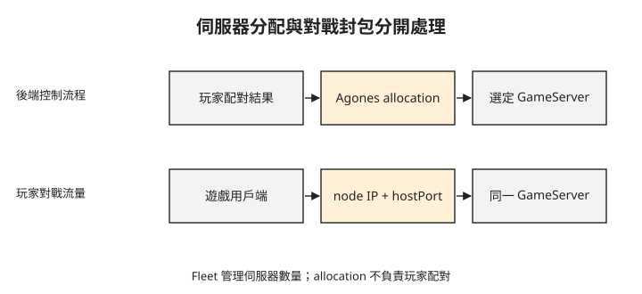

Day 0：副本補回來，為什麼玩家的對戰還是斷了？¶
四名玩家正在同一個房間對戰，伺服器記憶體裡保存著角色位置與剩餘時間。這時 Pod 被替換，新 Pod 很快就 Running，副本數也恢復了，但原本那場對戰沒有回來。前面 Sprint 1–4 已走過排程、觀測、執行期、服務網格與機密運算，這章接著從執行環境轉向遊戲對戰的生命週期，判斷單純維持 Pod 數量還缺哪些資訊。
先分清楚伺服器副本與進行中的對戰¶
dedicated game server 是專門執行遊戲對戰的伺服器程式。玩家共同參與的這段遊戲活動稱為 session；在本課的模型中，一場 session 的即時狀態保存在分配到的伺服器內。
Kubernetes 可以執行有狀態工作負載，但一般 Deployment 未記錄伺服器是否已分配給玩家，也不會自動把記憶體中的對戰狀態搬到另一個副本。因此「Pod 數量足夠」與「原對戰仍持續」是不同的要求。
Agones 在 Kubernetes 上增加遊戲伺服器的管理語意。它管理可分配與已分配的伺服器，讓更新和擴縮伺服器數量時能考慮這些狀態；它不會自動替任意遊戲實作斷線重連、對戰狀態複寫或災難恢復。
用三種物件表達不同的管理問題¶
GameServer 表示單一遊戲伺服器實例；Fleet 以共同規格管理一組 GameServer；GameServerAllocation 是要求挑選並分配可用伺服器的 API 物件。它們會在 Day 1–3 依序出現，但不應全部籠統稱為同一種 CRD：allocation 使用 Agones 提供的分配 API。
GameServer 的 Pod 內會加入 SDK sidecar，讓遊戲程式回報健康狀態、準備完成與結束。這些訊號補上一般 Pod Running 沒有表達的資訊。例如程式已啟動，但地圖還在載入時，還不該把玩家分過去。
hostPort 是節點上對應到 Pod 容器連接埠的入口。下面把平台分配與玩家遊戲封包分開。上排決定誰取得哪一台伺服器，下排才是進行中的對戰流量。

配置完成後，玩家要連的是選定伺服器的位址。後端每次替換成另一個 Pod，都不能假定它已擁有同一場 session 的狀態。
本課先使用 UDP 直連¶
本課 Agones 範例讓用戶端連向節點外部 IP 與動態 hostPort，沒有在中間使用 Kubernetes Service。以下是官方 quickstart 的 UDP echo 互動範例，不是本章另做的實測：
7190 是範例分配到的埠，不是每次固定值。用戶端應使用 GameServer 的 status.address 與 status.ports[].port；如果硬寫另一個埠，即使伺服器 Ready 也可能收不到回應。
很多即時遊戲會用 UDP 傳送位置等頻繁更新的資料，避免必須等待遺失資料重送後才能交付後續資料。UDP 本身不保證送達或順序，遊戲仍需自行處理重要事件、重送或排序。這是本課採用的範例，並不代表所有遊戲都只能使用 UDP。
登入、配對與遊戲連線是不同階段¶
後續會加入 Nakama，提供玩家登入與即時配對等後端功能。玩家先透過 HTTP／gRPC 登入；用戶端呼叫登入 API 時使用的 server key 是伺服器設定值，放在用戶端裡不等於能證明用戶端未被修改。登入成功後取得的 session token 是玩家的登入憑證，用於後續 API 呼叫；這裡的 session 指登入狀態，與前面所說的一場對戰活動不同。
配對時，用戶端帶著 session token 建立 WebSocket 長連線，送出配對請求後，持續在同一條連線等待伺服器主動推送配對結果。Nakama 回傳的 matchmaker ticket 代表一筆仍在排隊的配對請求，取消配對時用它指定要取消哪一筆。配對完成後，由後端要求 Agones 分配伺服器，再把連線資訊交給玩家。
配對決定「哪些玩家一起玩」，allocation 決定「這組玩家使用哪台伺服器」。Agones 不會僅因收到 allocation 就替你完成玩家技能分組。
Day 4 還會加入 Quilkin，也就是遊戲用 UDP proxy。用戶端可以先連 proxy，再由 proxy 把封包轉到選定 GameServer。此時 routing token 是選擇後端的資料，不能直接當成玩家身分或防作弊保證。
從 Ready 與 Allocated 開始讀狀態¶
接下來最常看的狀態是 Ready 與 Allocated：前者表示可供配置，後者表示已配置給使用者。GameServer 還有啟動、排程、關閉等狀態，不能把這兩個值當成完整狀態機。
連接埠採 portPolicy: Dynamic 時，Agones 會從設定範圍選 hostPort；因此防火牆必須涵蓋預定範圍。健康回報則由 SDK 與控制元件處理。以下是本課版本使用的預設欄位，後面遇到健康狀態時會回來對照：
spec.health:
initialDelaySeconds: 5
periodSeconds: 5
failureThreshold: 3
spec.sdkServer:
grpcPort: 9357
httpPort: 9358
periodSeconds 與 failureThreshold 影響健康回報缺失如何被判定；9357、9358 是 SDK 通訊入口，不是玩家要連的遊戲埠。不要把 SDK port 與 GameServer status 中的動態 hostPort 混用。
想一想¶
- 三個 Pod 都 Running，但只有一個 GameServer Ready，後端應假設有三台可以立刻分配嗎？
- 玩家已完成配對，為什麼還需要 allocation？
- GameServer 重建後 hostPort 改變，用戶端仍連舊埠。先檢查哪個欄位，而不是直接判定 UDP 程式壞掉？
小結¶
遊戲伺服器需要表達準備完成、分配與結束，單靠 Pod 副本數無法保護一場對戰的記憶體狀態。Agones 提供這些管理語意，登入、玩家配對與遊戲封包則分別由對應服務處理。Day 1 會建立第一個 GameServer，讀取它實際分配的位址與埠，再從叢集外驗證 UDP 回應。
延伸閱讀¶
想再深入，可以從這幾份開始：
- Agones 概觀：元件與管理範圍。
- GameServer reference：狀態、port policy 與健康設定。
- 建立第一個 GameServer：直連範例。
- Nakama 配對：配對連線與 ticket 的生命週期。
Agones 標誌為 CNCF（Linux Foundation）官方資產，此處作社群教學用途。